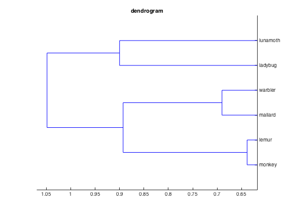
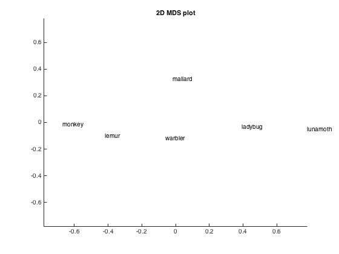
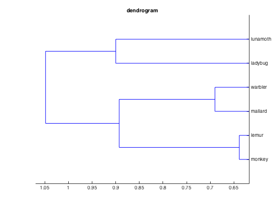
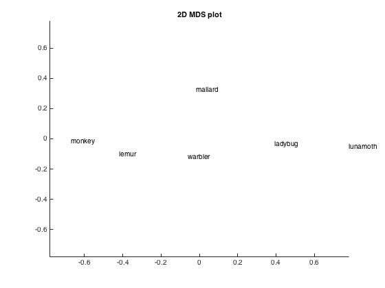

Demo: DISTATIS
The data used here is available from http://cosmomvpa.org/datadb.zip
It is based on the following work: * Connolly et al (2012), Representation of biological classes in the human brain. Journal of Neuroscience, doi 10.1523/JNEUROSCI.5547-11.2012
Six categories (monkey, lemur, mallard, warbler, ladybug, lunamoth) during ten runs in an fMRI study.
This example shows the application of DISTATIS, which tries to find an optimal 'compromise' dissimilarity matrix across a set of observations (participants)
Reference: - Abdi, H., Valentin, D., O?Toole, A. J., & Edelman, B. (2005). DISTATIS: The analysis of multiple distance matrices. In Proceedings of the IEEE Computer Society: International conference on computer vision and pattern recognition, San Diego, CA, USA (pp. 42?47).
- For CoSMoMVPA's copyright information and license terms, #
- see the COPYING file distributed with CoSMoMVPA. #
Contents
Set data paths
The function cosmo_config() returns a struct containing paths to tutorial data. (Alternatively the paths can be set manually without using cosmo_config.)
config=cosmo_config(); study_path=fullfile(config.tutorial_data_path,'ak6'); output_path=config.output_data_path; readme_fn=fullfile(study_path,'README'); cosmo_type(readme_fn); % reset citation list cosmo_check_external('-tic');
# # # ##### ######
# # # # # # # # ## ##### ##
# # # # # # # # # # # #
# # ### ##### ###### # # # # # # #
####### # # # # # # ###### # ######
# # # # # # # # # # # # #
# # # # ##### ###### # # # # #
Overview
--------
fMRI responses to viewing images of six species in the animal kingdom,
used in Connollly et al. 2012.
Contents
--------
- s0[1-8]/ This directory contains fMRI data from 8 of the 12
participants studied in the experiment reported in
Connolly et al. 2012 (Code-named 'AK6' for animal
kingdom, 6-species). Each subject's subdirectory
contains the following data:
- glm_T_stats_perrun.nii A 60-volume file of EPI-data preprocessed using
AFNI up to and including fitting a general linear
model using 3dDeconvolve. Each volume contains the
t-statistics for the estimated response to a one
of the 6 stimulus categories. These estimates were
calculated independently for each of the 10 runs
in the experiment.
- glm_T_stats_even.nii Data derived from glm_T_stats_perrun.nii.
- glm_T_stats_odd.nii Each is a 6-volume file with the T-values averaged
across even and odd runs for each category.
- brain.nii Skull-stripped T1-weighted anatomical brain image.
- brain_mask.nii Whole-brain mask in EPI-space/resolution.
- vt_mask.nii Bilateral ventral temporal cortex mask similar to
that used in Connolly et al. 2012.
- ev_mask.nii Bilateral early visual cortex mask.
- models
- behav_sim.mat Matlab file with behavioural similarity ratings.
- v1_model.mat Matlab file with similarity values based on
low-level visual properties of the stimuli.
Methods
-------
The stimulus-specific volumes in the stats T-stats file are in the order
monkey, lemur, mallard (duck), warbler, ladybug, lunamoth
for each of the ten runs.
Reference
---------
When using this dataset for any publication please cite:
Connolly, A. C. , Guntupalli, J. S. , Gors, J. , Hanke, M. , Halchenko, Y. O.,
Wu, Y. , Abdi, H. and Haxby, J. V. (2012). Representation of biological classes
in the human brain. Journal of Neuroscience, 32, 2608-2618.
[PDF] DOI: 10.1523/JNEUROSCI.5547-11.2012,
Contact
-------
Andrew C. Connolly <andrew.c.connolly |at| dartmouth.edu>
Preprocessing for DISTATIS: RSM analysis
%%%%%%%%%%%%%%%%%%%%%%%%%%%%%%%%%%%%%%%%%%%%%%%%%%%%%%%%%%%%%%% subject_ids={'s01','s02','s03','s04','s05','s06','s07','s08'}; nsubjects=numel(subject_ids); mask_label='vt_mask'; ds_rsms=cell(nsubjects,1); % allocate space for output for subject_num=1:nsubjects subject_id=subject_ids{subject_num}; % Code from here is pretty much identical to that above >>> % set path for this subject data_path=fullfile(study_path,subject_id); % Define data locations and load data from even and odd runs mask_fn=fullfile(data_path, [mask_label '.nii']); % vt mask % Use odd runs only data_fn=fullfile(data_path,'glm_T_stats_odd.nii'); ds=cosmo_fmri_dataset(data_fn,'mask',mask_fn,... 'targets',1:6,'chunks',1); ds_rsm=cosmo_dissimilarity_matrix_measure(ds); % set chunks (one chunk per subject) ds_rsm.sa.chunks=subject_num*ones(size(ds_rsm.samples,1),1); ds_rsms{subject_num}=ds_rsm; end % combine data from all subjects all_ds=cosmo_stack(ds_rsms);
Run DISTATIS
distatis=cosmo_distatis(all_ds);
show comprimise distance matrix
[compromise_matrix,dim_labels,values]=cosmo_unflatten(distatis,1);
labels={'monkey', 'lemur', 'mallard', 'warbler', 'ladybug', 'lunamoth'};
n_labels=numel(labels);
figure();
imagesc(compromise_matrix)
title('DSM');
set(gca,'YTick',1:n_labels,'YTickLabel',labels);
set(gca,'XTick',1:n_labels,'XTickLabel',labels);
ylabel(dim_labels{1});
xlabel(dim_labels{2});
colorbar
% skip if stats toolbox is not present
if cosmo_check_external('@stats',false)
figure();
hclus = linkage(compromise_matrix);
dendrogram(hclus,'labels',labels,'orientation','left');
title('dendrogram');
figure();
F = cmdscale(squareform(compromise_matrix));
text(F(:,1), F(:,2), labels);
title('2D MDS plot');
mx = max(abs(F(:)));
xlim([-mx mx]); ylim([-mx mx]);
end
  
  show citation information
cosmo_check_external('-cite');
If you use CoSMoMVPA and/or some other toolboxes for a publication, please cite: J. Shen. NIFTI toolbox. available online from http://www.mathworks.com/matlabcentral/fileexchange/8797-tools-for-nifti-and-analyze-image Abdi, H., Valentin, D., O'Toole, A. J., Edelman, B. (2005). DISTATIS: The analysis of multiple distance matrices. In Proceedings of the IEEE Computer Society: International conference on computer vision and pattern recognition, San Diego, CA, USA (pp. 42-47). DISTATIS CoSMoMVPA implementation available online from http://cosmomvpa.org N. N. Oosterhof, A. C. Connolly, J. V. Haxby (2016). CoSMoMVPA: multi-modal multivariate pattern analysis of neuroimaging data in Matlab / GNU Octave. Frontiers in Neuroinformatics, doi:10.3389/fninf.2016.00027.. CoSMoMVPA toolbox available online from http://cosmomvpa.org The Mathworks, Natick, MA, United States. Matlab 8.5.0.197613 (R2015a) (February 12, 2015). available online from http://www.mathworks.com